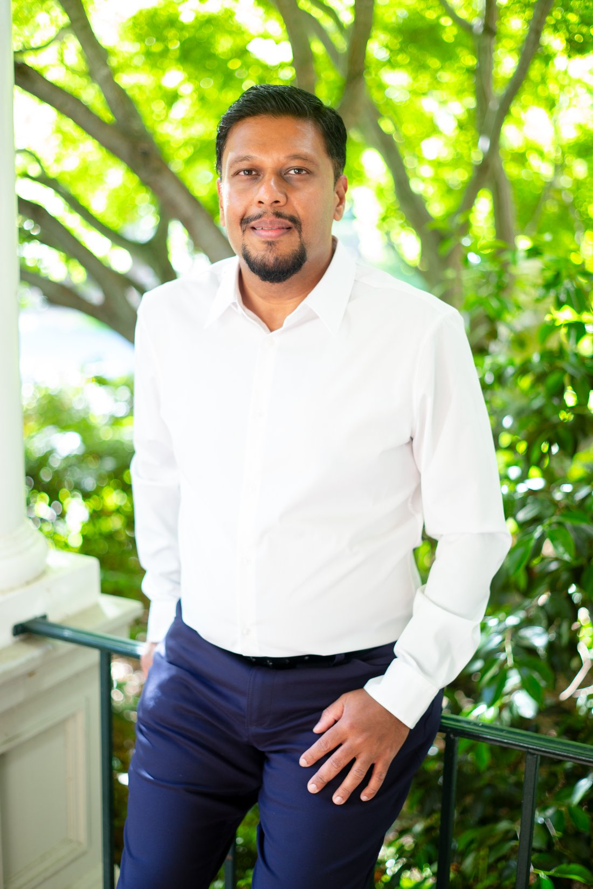

About
Arvind Karunakaran
Assistant Professor of Management Science & Engineering, and (by courtesy) of Sociology, Stanford University.

Biography
Event organizers: short bios and an emcee introduction are on the speaking page.
Arvind Karunakaran studies authority and accountability in the workplace, especially in the context of technological change. His current work examines human–AI augmentation and its consequences for professionals and organizations.
He is an Assistant Professor of Management Science & Engineering and, by courtesy, of Sociology at Stanford University. He is core faculty at the Center for Work, Technology, and Organization (WTO) and the Stanford Technology Ventures Program (STVP), and a faculty affiliate of the Stanford Institute for Human-Centered AI (HAI) and the Digital Economy Lab.
His research uses ethnographic and field-based methods, complemented by comparative-historical analysis of archival data and computational analysis of large text corpora. It appears in Administrative Science Quarterly, Organization Science, Academy of Management Journal, Academy of Management Annals, Research Policy, and Harvard Business Review, and has been covered by The New York Times, The Wall Street Journal, The Washington Post, the Financial Times, and MSNBC. He was named to the Thinkers50 Radar in 2025.
A computer science engineer by training, with prior work experience in the technology and consulting industries, he holds a master’s in Information Science and Technology from Penn State and a PhD in Management (Information Technology and Organizations) from the MIT Sloan School of Management.
Appointments
Assistant Professor of Management Science & Engineering, and by courtesy of Sociology
Stanford UniversityCore faculty
Center for Work, Technology, and OrganizationCore faculty
Stanford Technology Ventures ProgramFaculty affiliate
Stanford HAIFaculty affiliate
Digital Economy Lab
Education
PhD, Management (Information Technology and Organizations)
MIT Sloan · 2018Master’s, Information Science and Technology
Penn State
Selected honors
- 2025Thinkers50 Radar
- 2025Ascendant Scholar, Western Academy of Management
- 2024W. Richard Scott Article Award, ASA Organizations, Occupations, and Work Section
- 2024Responsible Research in Management Award
- 2022Giarratani Rising Star Award, Industry Studies Association
Teaching
Courses at Stanford
Courses on organizations, organizational behavior, and the study of technology and work, at the undergraduate, master’s, and doctoral levels.
Undergraduate & master’s
MS&E 180 · Organizations: Theory and Management
SpringAn introduction to organization theory and its application to the design and management of organizations. Syllabus · Spring 2026
MS&E 280 · Organizational Behavior: Evidence in Action
SpringEvidence-based approaches to individual and group behavior in organizations.
Doctoral
MS&E 382 / SOC 386 · Meso-Organizational Theory
SpringA doctoral seminar bridging micro and macro perspectives on organizations.
MS&E 386 / SOC 360 · Doctoral Research Seminar on Technology & Organizations
SpringA research seminar on the study of technology, work, and organizations.
MS&E 408 · Directed Reading and Research
All quartersIndividually supervised reading and research.
Executive & professional education. I also teach in executive and professional education programs on organizations, technological change, and the future of work. Details and materials are available on request; see also the executive session catalog.
Students
Advisees
I advise doctoral and master’s students working at the intersection of organizations, technology, and work. Prospective students should review my research before reaching out.
Doctoral · dissertation advisor
- Noah Benjamin-Pollak
- Devesh Narayanan
- Brian Lattimore
Doctoral · dissertation reader
- Emma Casey
- Allie Cemalovic
Master’s
- Eamon Aalipour
- Sambhav Aggarwal
- Shikoh Hirabayashi
- Sanjana Khurana
- Jackie King
- Grace Metri
- Merve Ondogan
- Armin Rezaiean-Asel
- Jesus Santos Aranda
- Emna Sellami
- Jiecong Tan
- Aaron Thompson